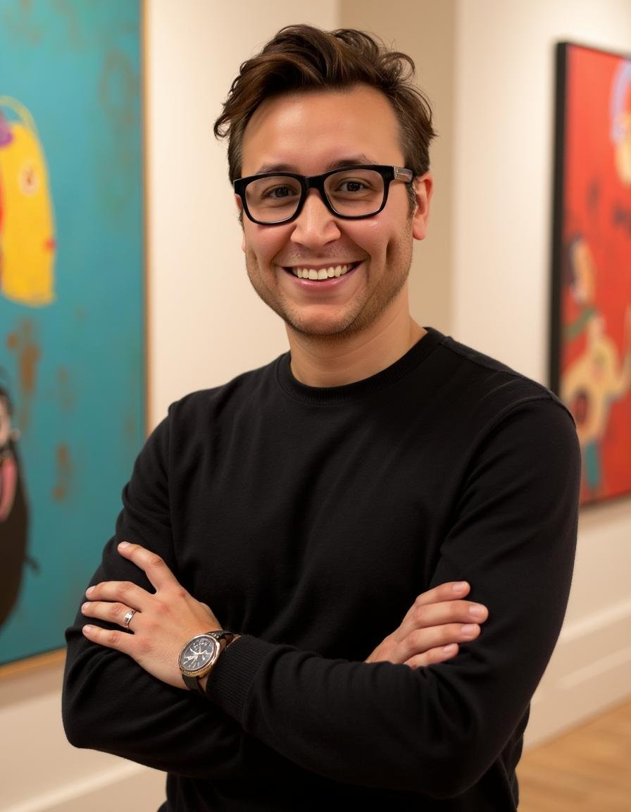

Ruben Francisco
Designer & Illustrator
Work History
Studio Concentric
Creative direction, production design, brand storytelling, experiential campaigns, digital & physical media.
Apple
Campaign support, creative development, and cross-functional production collaboration.
Electronic Arts (EA)
Visual development, interactive media, and branded creative initiatives.
Fasan Arts (Universal Studios Orlando)
Scenic art, themed environments, and large-scale experiential installations.
Select Clients
- Universal Studios
- Electronic Arts
- Disney
- Microsoft
- Intel
Awards & Press
- Grammy-Nominated Campaigns
- Industry Creative Recognition
- Experiential & Brand Storytelling Features